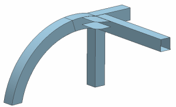

Turn off polygon bodies
Turn off polygon bodies that make up the original part, to display the midsurface.
 Simulation Navigator
Simulation Navigator
-
 Polygon Geometry (expand)
Polygon Geometry (expand)
-
 Polygon Body (23) (deselect)
Polygon Body (23) (deselect)
-
Repeat for Polygon Body (24) through Polygon Body (29).
